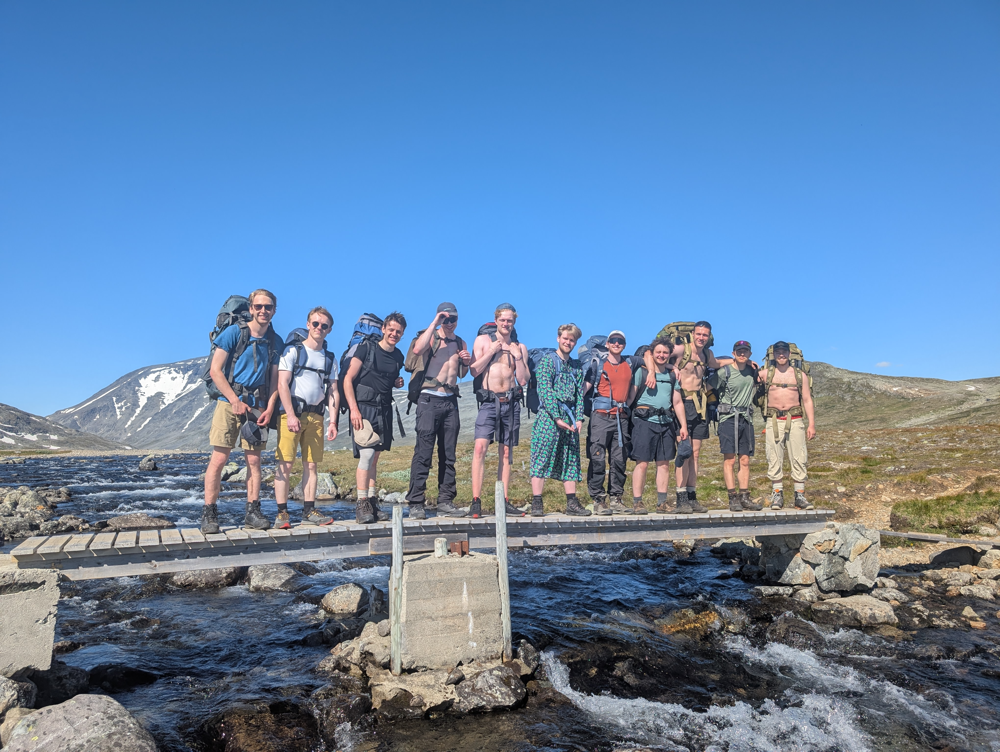
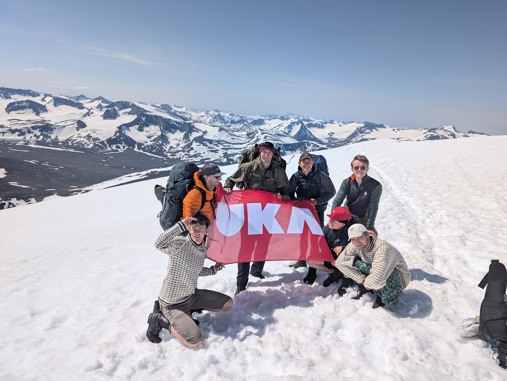
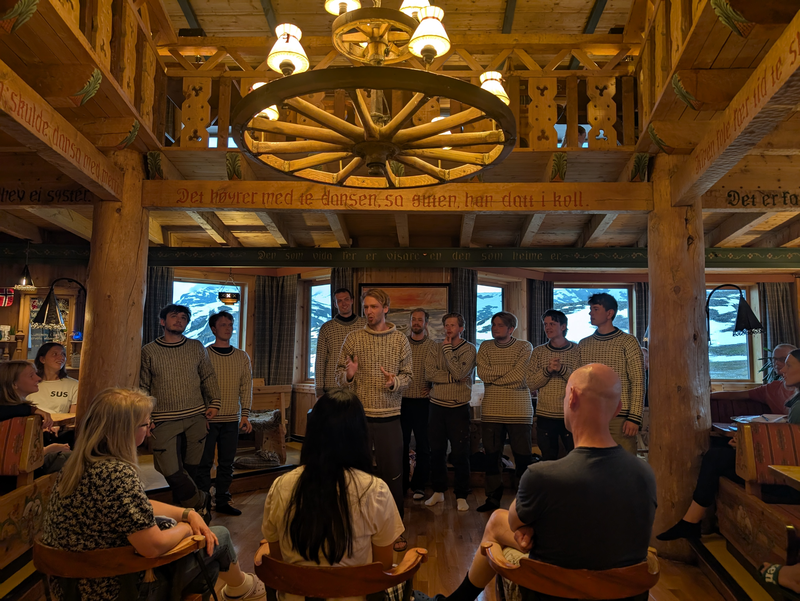
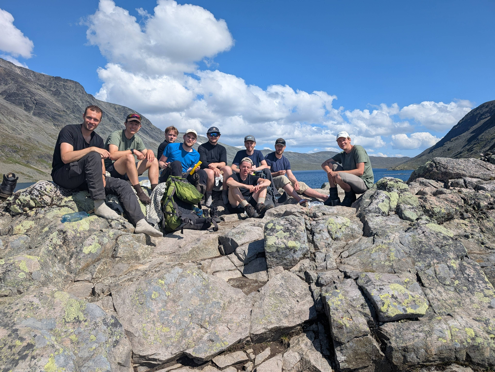
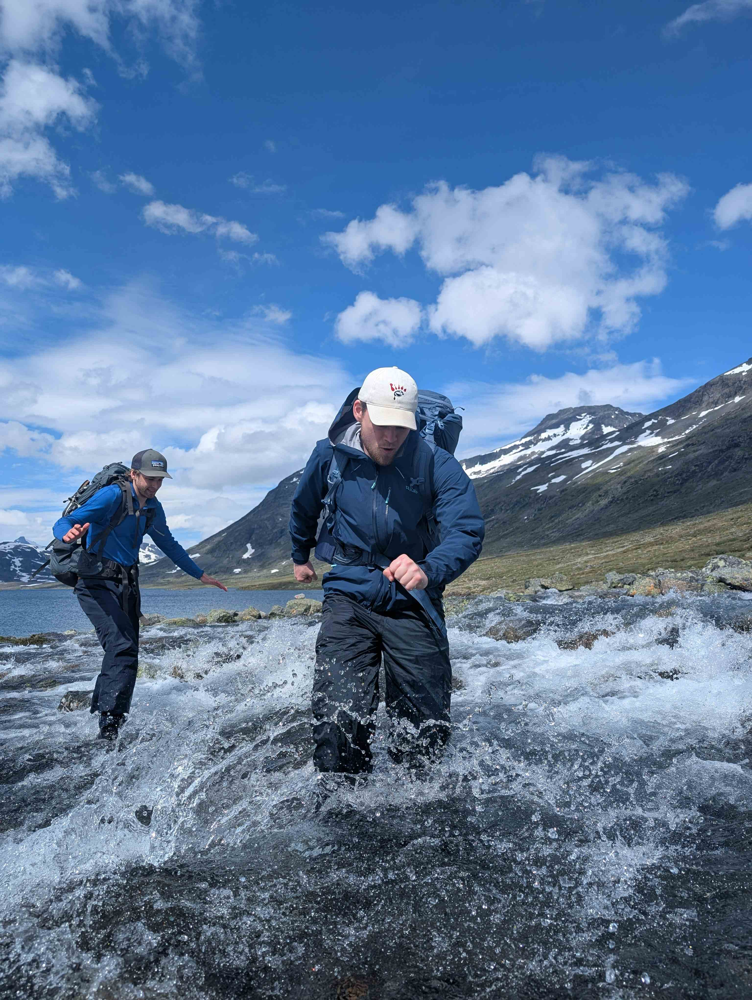

Nidaros Geitekor er et fjellkor bestående av ca 12 sangere, som liker å gå tur og underholde det norske fjellfolket. Vi har alle bakgrunn fra Trondhjems Studentersangforening, fra Studentersamfundet i Trondheim.




